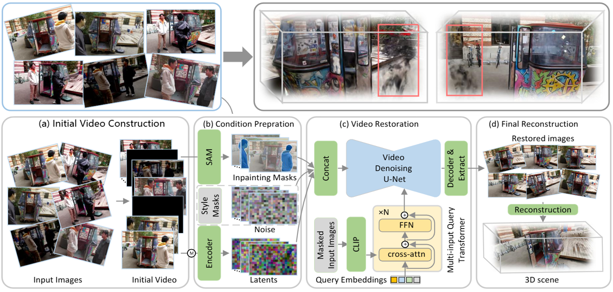

About· 01 ·
I'm a fourth-year undergraduate student at Xi'an Jiaotong University, majoring in CS. I am now a Research Intern at the Stanford Vision and Learning Lab (SVL), working closely with Koven Yu and Prof. Jiajun Wu on 3D visual generation. Meanwhile, I'm a Research Intern at ZJU3DV, Zhejiang University, working with Prof. Sida Peng and Prof. Xiaowei Zhou on robust 3D reconstruction. Previously, I worked with Prof. Xiangyong Cao and Prof. Deyu Meng on low-level image processing at Xi'an Jiaotong University.
My research interest is to build virtual worlds that digitalize the physical world and enable downstream applications such as entertainment and robotics.
Toward this goal, I focus on learning world representations from multi-modal data and building generative models on top of them.
Recently, I have been interested in long-context generative world modeling, physically-grounded generation, and controllable generation in support of this goal.
News· 02 ·
- WonderZoom is accepted by CVPR 2026! 🎉 Hope my visa goes well so I can see you in Denver! 🥺
- One paper is accepted by ICCV 2025. But can't see you in Hawaii since my visa is going to expire. 😭
- I join Stanford Vision and Learning Lab as an intern, working with Koven Yu. 🎓
- I join ZJU3DV as an intern, working with Prof. Sida Peng. 🎓
Publications· 03 ·


ICCV 2025
UniVerse: Unleashing the Scene Prior of Video Diffusion Models for Robust Radiance Field Reconstruction


* indicates equal contribution.
Experience· 04 ·

Stanford Vision and Learning Lab (SVL)
Research Intern with Koven Yu and Prof. Jiajun Wu · Iterative 3D Scene Generation

ZJU3DV, Zhejiang University
Research Intern with Prof. Sida Peng and Prof. Xiaowei Zhou · Robust Radiance Field Reconstruction

Xi'an Jiaotong University
Research with Prof. Xiangyong Cao and Prof. Deyu Meng · Low-Level Image Processing (Super Resolution, Dehazing)